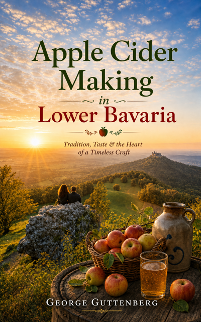

Apple Cider Making in Lower Bavaria
Preserving the art and tradition of Lower Bavarian apple cider craftsmanship
View BookGeorge Guttenberg
Apple cider is the best drink that has ever been served anywhere.

Preserving the art and tradition of Lower Bavarian apple cider craftsmanship
View BookGeorge hails from the green hills of southern Germany, where he engages in making the finest apple cider southern Germany has ever seen.
Read MoreLatest book news, releases, and updates appear here.